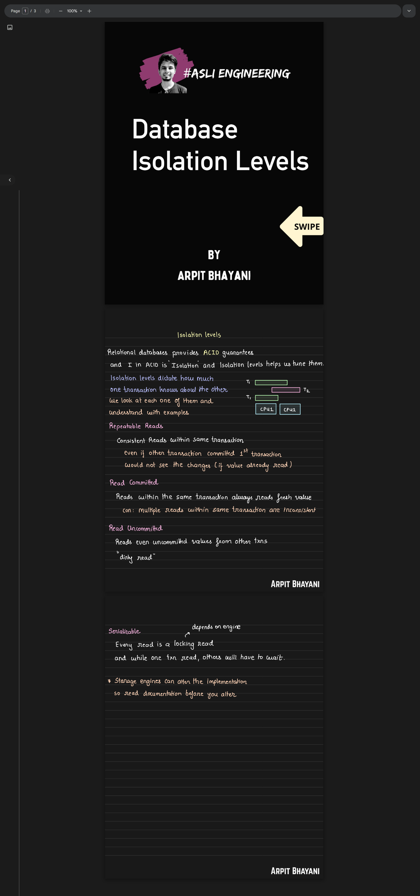

Database Isolation Level
[

This document explains isolation levels in database, using real examples, two transactions.
1. What Does “Isolation” Mean?¶
Imagine many people using the same database at the same time.
Isolation answers this question:
"While I am doing my work, what changes from others am I allowed to see?"
Transactions do NOT run one after another. They run together, but isolation controls what they can see.
2. Transactions¶
A transaction is a group of steps that must happen together.
Example:
BEGIN
Read balance
Update balance
COMMIT
Either all steps succeed or none of them apply.
3. Problems That Happen Without Proper Isolation (Anomalies)¶
Before learning isolation levels, understand these problems.
3.1 Dirty Read (Reading a Lie)¶
What it means¶
You read data before the other person finishes their work.
Example¶
Initial balance = 100
T1 (Transaction 1) T2 (Transaction 2)
------------------ ------------------
UPDATE balance = 0
READ balance → 0 ❌
ROLLBACK
Final balance is still 100, but T2 saw 0, which never actually existed.
📌 This is called a Dirty Read
3.2 Non‑Repeatable Read (Data Keeps Changing)¶
What it means¶
You read the same row twice and get different values.
Example¶
T1 T2
------------------ ------------------
READ balance → 100
UPDATE balance = 200
COMMIT
READ balance → 200 ❌
T1 is confused: "I didn’t change anything, why did my data change?"
📌 This is a Non‑Repeatable Read
3.3 Phantom Read (New Rows Appear Like Ghosts)¶
What it means¶
You run the same query twice, but the number of rows changes.
Example¶
T1 T2
------------------ ------------------
SELECT COUNT(*)
WHERE salary > 50k → 2
INSERT salary = 70k
COMMIT
SELECT COUNT(*)
WHERE salary > 50k → 3 ❌
Rows appeared out of nowhere.
📌 This is a Phantom Read
3.4 Write Skew (Very Important)¶
What it means¶
Two people make individually correct updates, but together they break a rule.
Example (Doctor On‑Call Rule)¶
Rule: At least one doctor must be on call
T1 T2
------------------ ------------------
READ A=ON, B=ON READ A=ON, B=ON
SET A=OFF SET B=OFF
COMMIT COMMIT
Final state:
A = OFF
B = OFF ❌ (Rule broken)
📌 This happens even though no row conflict occurred.
4. Isolation Levels (Big Picture)¶
Think of isolation levels as rules that block some of the problems above.
| Isolation Level | Dirty Read | Non‑Repeatable | Phantom | Write Skew |
|---|---|---|---|---|
| READ UNCOMMITTED | ❌ | ❌ | ❌ | ❌ |
| READ COMMITTED | ✅ | ❌ | ❌ | ❌ |
| REPEATABLE READ | ✅ | ✅ | ❌ | ❌ |
| SERIALIZABLE | ✅ | ✅ | ✅ | ✅ |
5. READ UNCOMMITTED (Almost Never Used)¶
Idea¶
"Read anything, even unfinished work."
What happens¶
-
Dirty reads allowed
-
Data can be totally wrong
📌 Most real databases don’t even allow this.
6. READ COMMITTED (Most Common)¶
Idea¶
"Only read committed data, but data may change later."
Example¶
T1 T2
------------------ ------------------
READ balance → 100
UPDATE balance = 200
COMMIT
READ balance → 200 (allowed)
Mental Model¶
Each query gets a fresh view of committed data.
📌 Default in PostgreSQL, Oracle, SQL Server
7. REPEATABLE READ¶
Idea¶
"Once I read something, it should not change for me."
Example¶
T1 T2
------------------ ------------------
READ balance → 100
UPDATE balance = 200
COMMIT
READ balance → 100 (same)
But Phantom Reads?¶
T1 T2
------------------ ------------------
COUNT salary > 50k → 2
INSERT salary = 70k
COMMIT
COUNT salary > 50k → 3 ❌
📌 Snapshot stays same for rows, not for ranges (DB‑dependent)
8. SERIALIZABLE (Strongest)¶
Idea¶
"Behave as if transactions ran one after another."
Example¶
T1 runs fully
then
T2 runs fully
How DBs Actually Do This¶
-
They don’t block everything immediately
-
They detect conflicts
-
They may abort one transaction
📌 Safest but slowest
9. Snapshot Isolation (Reality Check)¶
Most databases actually use snapshots, not pure locking.
What Snapshot Means¶
"I see the database as it was when I started."
Problem¶
Snapshot isolation does NOT stop write skew.
That’s why:
REPEATABLE READ ≠ SERIALIZABLE
"Isolation controls which concurrency problems are allowed. Most systems use Read Committed for performance. Serializable is used only when correctness is critical because it may abort transactions."
10. One‑Line Memory Trick¶
-
Dirty Read → Reading unfinished work
-
Non‑Repeatable → Same row changes
-
Phantom → Row count changes
-
Write Skew → Rule broken without conflict
11. Final Takeaway¶
Isolation is a trade‑off:
-
Higher isolation → safer but slower
-
Lower isolation → faster but risky
choose isolation based on business rules, not defaults.